पृथ्वी
Earth
Grounded campus blocks, shaded courts, and a strong institutional base.
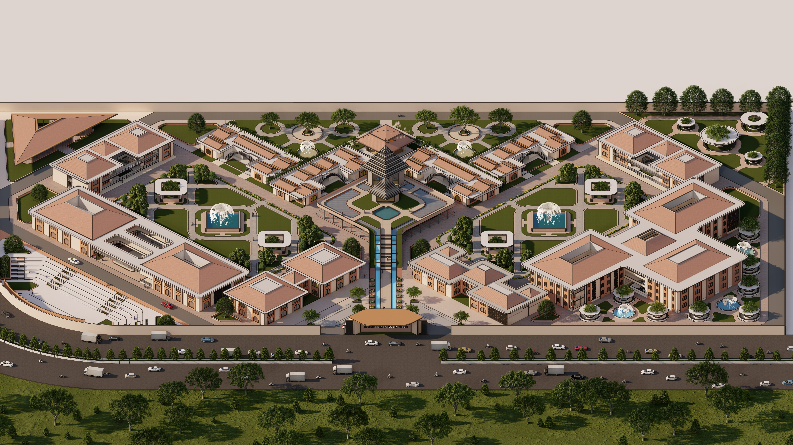
A contemporary institutional campus where Sanskrit research, gurukul learning, public culture, residence, landscape, and spiritual practice are organized through a Vastu Purusha Mandala.
The thesis proposes a dedicated Vedic Sanskrit Research Centre and Institute for scholars, students, and the public. The campus is designed as more than a school: it is a structured environment for research, learning, manuscripts, museum engagement, residence, ritual, and cultural continuity.
The design challenge was to organize multiple programs without losing coherence. The answer is a campus-level ordering system: the Vastu Purusha Mandala provides orientation and hierarchy, while the gurukul model shapes open, semi-open, and enclosed learning spaces.
The project translates traditional ordering principles into a contemporary campus strategy: axis, hierarchy, courtyard, water, shade, and pedestrian sequence.
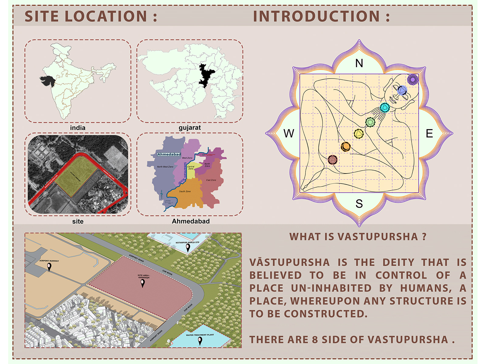
Grounded campus blocks, shaded courts, and a strong institutional base.
Axial water bodies mark movement and create a cooler microclimate.
Yagyashala and ritual spaces become the energetic end of the campus sequence.
Open classrooms, courtyards, and semi-open corridors support natural ventilation.
The sequence establishes access, lays the mandala grid, carves built mass, anchors the temple, and layers landscape as a cultural-spatial connector.
Main and secondary entries define the north-east arrival condition and connect to the primary spine.
The site is divided by cardinal orientation so the campus reads as a clear geometric system.
Buildings are separated to form courts, shaded edges, and porous movement corridors.
The Shiva temple is placed at the symbolic centre, giving the campus its primary spatial focus.
Water, vegetation, and plazas make the institutional plan experiential, not only diagrammatic.
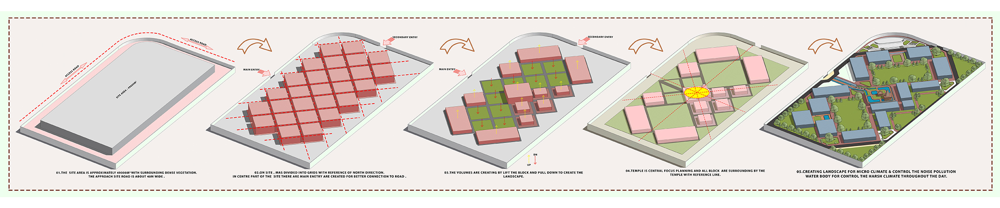
Use the interactive tabs to review the core technical sheets. Select any image to inspect it in full-screen.
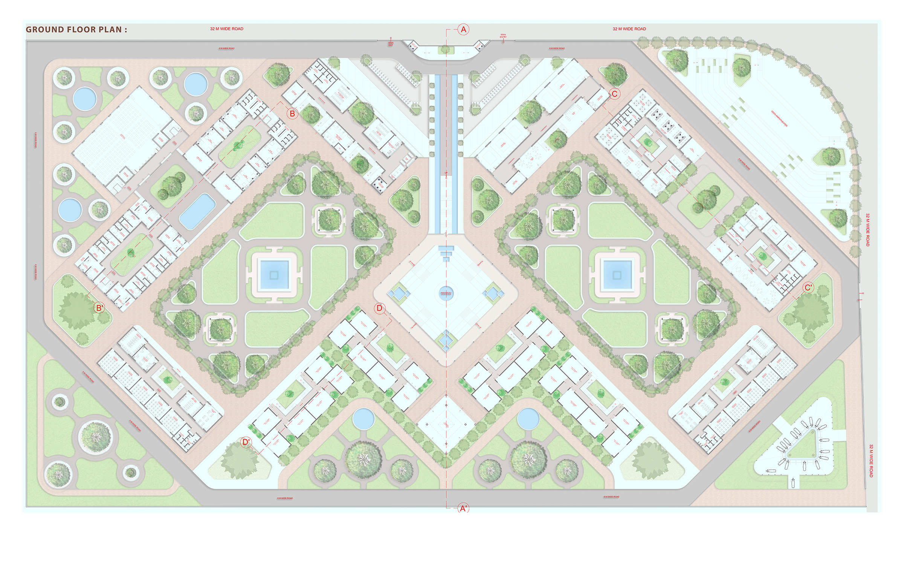
Symmetrical campus organization around the central temple and plaza, with research, pathshala, residential, museum, auditorium, goshala, and ritual zones.
Filter by render, concept, or drawing. Click any image for a focused viewing mode.
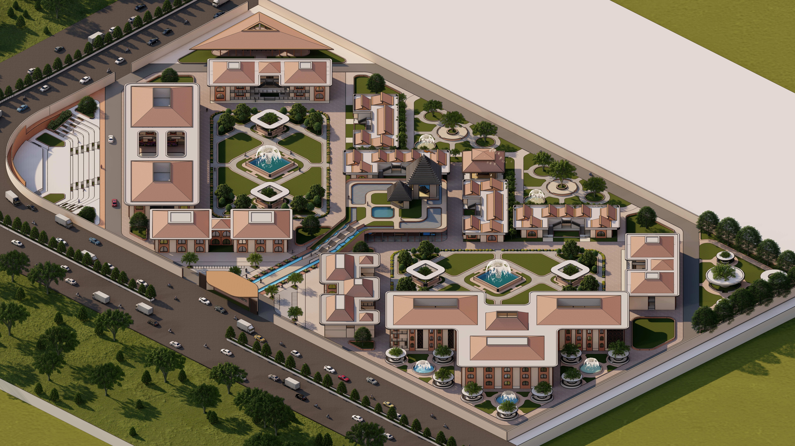
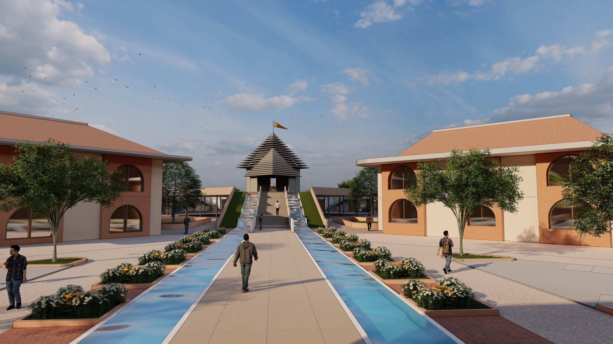
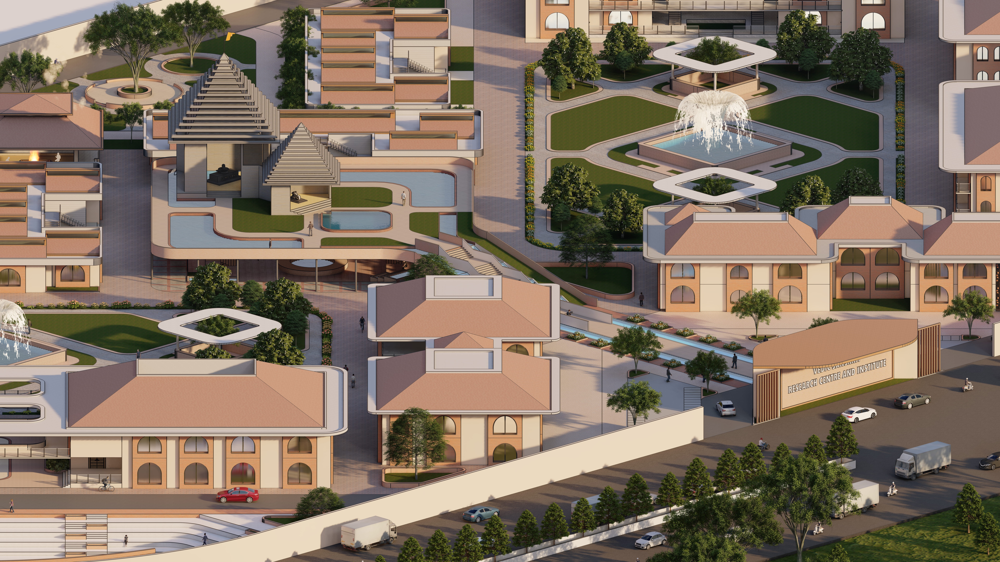
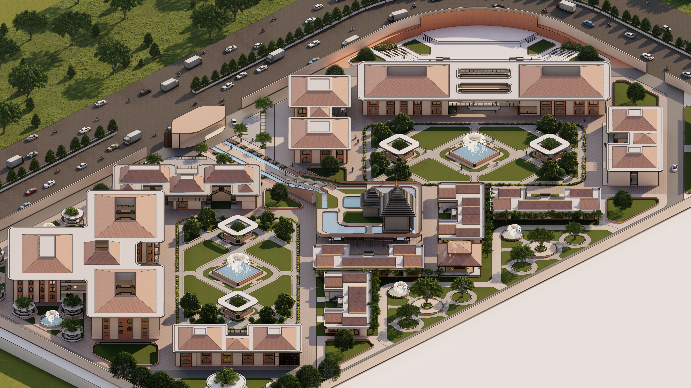
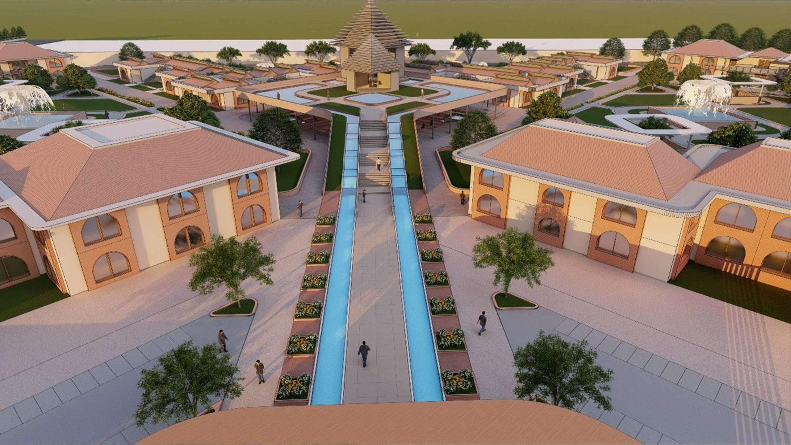
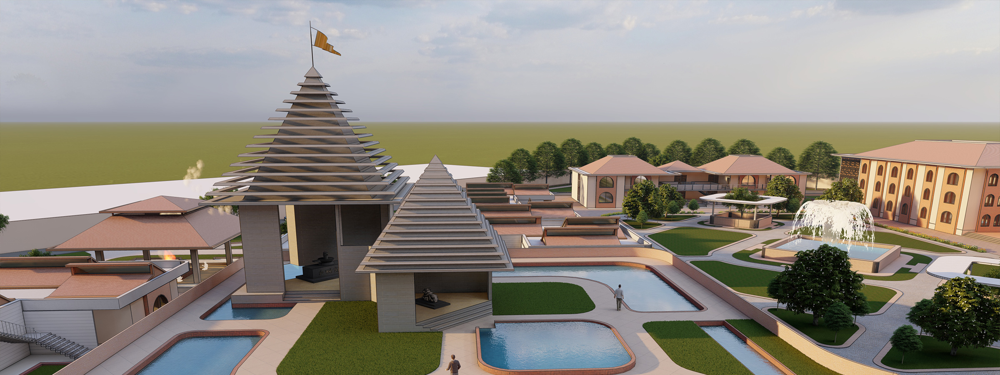
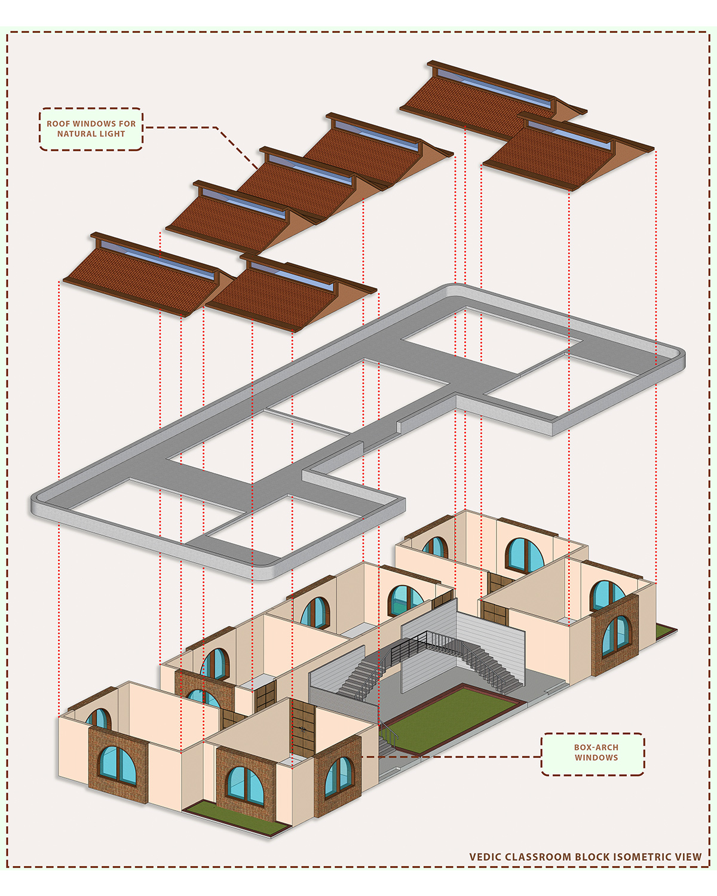
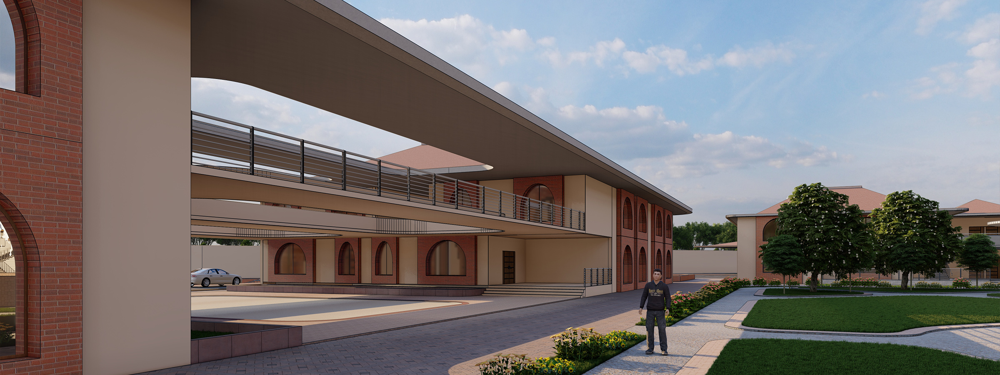
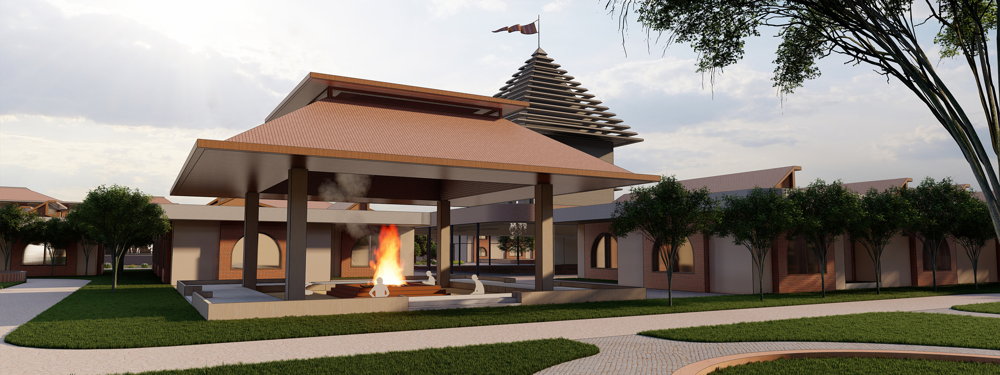
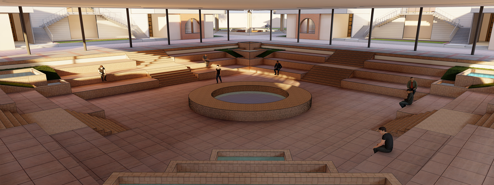
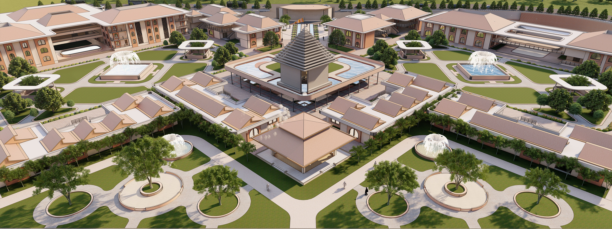
A contemporary institution does not need to copy historical architecture to respect tradition. It can use traditional systems as operational design logic: orientation, hierarchy, courtyard, threshold, and ritual sequence.
The project demonstrates campus-scale organization through axis, grid, zoning, and clear user movement.
Vastu and gurukul principles become spatial tools instead of decorative references.
The case study communicates architectural thinking, technical drawing, visual storytelling, and project-management-level clarity.
This public website shows only the portfolio case study. The full thesis PDF is intentionally not linked for public download.